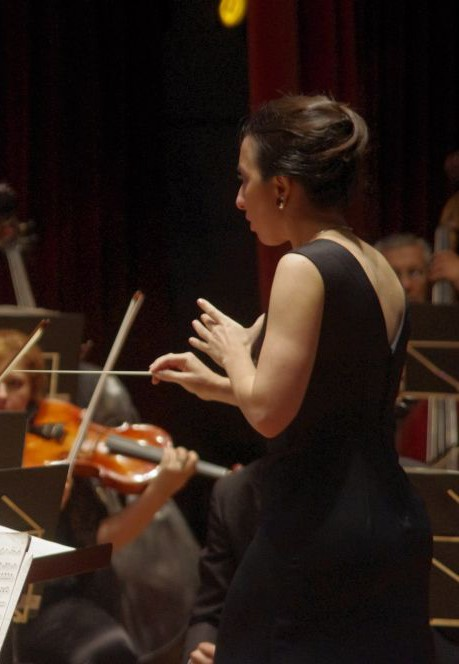

Maestra Andrea Fusco
Una vida dedicada a la dirección orquestal y coral

Trayectoria Internacional
Experiencias en Italia, Suiza, México y Bulgaria

Premios Internacionales
Reconocida por su excelencia artística en todo el mundo
Una vida dedicada a la dirección orquestal y coral
Experiencias en Italia, Suiza, México y Bulgaria
Reconocida por su excelencia artística en todo el mundo
Conoce la trayectoria profesional y académica de la Dra. Andrea Fusco

Nacida en Corrientes, Argentina, Andrea Fusco es una destacada figura del ambiente artístico. Doctora en Artes por la Universidad Nacional de Córdoba, obtuvo previamente los títulos de Profesora y Licenciada en Música con especialidad en Dirección Orquestal y Coral en la Universidad Nacional del Litoral. Su pasión por la música y su sensibilidad artística la han llevado a consolidarse como directora de orquesta y coro, docente e intérprete de gran versatilidad.
Su trayectoria académica se enriqueció con estudios junto a reconocidos maestros como Reinaldo Zemba y Thüring Bräm. En 2001, fue becada por la Embajada de Suiza y la Fundación El Sonido y el Tiempo para perfeccionarse en Dirección Orquestal en Lucerna, bajo la guía del maestro Bräm. Posteriormente, participó en los Festivales de Verano de la Accademia Musicale Chigiana en Siena (Italia), trabajando con el célebre Gianluigi Gelmetti.
En 2006, obtuvo una beca de la Secretaría de Cultura de la Nación para continuar su perfeccionamiento en Suiza y Eslovaquia, y al año siguiente alcanzó el Tercer Premio en el Concurso Internacional Simón Blech, donde ya había sido semifinalista en 2006.
Trabajó como Directora Invitada junto a Orquestas Sinfónicas de las Provincias de Corrientes, Chaco, Entre Ríos, Tucumán, como así también con las orquestas sinfonicas de Bahía Blanca y Tres de Febrero (Bs. As.), además de su trabajo internacional junto a la Orquesta Sinfónica de Aguascalientes (México) y la Orquesta Sinfónica de Ruse (Bulgaria), esta última con la guia del Mtro. Jorma Panula en septiembre de 2010.
Fue docente y Directora de la Orquesta Juvenil del Instituto de Música “Carmelo De Biasi” - En 2008 fue docente en la Cátedra de Dirección Orquestal de la Universidad Nacional del Litoral (Santa Fe), contribuyendo a la formación de jóvenes músicos.
Fue directora musical de las óperas:
Ha trabajado junto a destacados solistas internacionales como Luis Ascott, Mirian Conti y José Luis Juri (Piano), Oleg Pishenin y Natasha Shismónina (violín), Manuel Núñez Camelino (Tenor), Osvaldo Burgos (Stick), Aníbal Borzone (Marimba), Leonardo López Linares (barítono) Darío Volonté (tenor), Lito Vitale Quinteto, Mateo Villalba, Verónica Cangemi (Soprano), Patricia Sosa, Raul Lavié, Chango Spasiuk, Antonio Tarrago Ros, entre otros.
Formación académica superior
Experiencia profesional
Especialización en coros
Premios internacionales

Un rol preponderante tuvo la Orquesta Sinfónica de la Provincia de Corrientes bajo dirección de la Maestra Andrea Fusco en la interpretación de los cuadros musicales en vivo. Con tres funciones de un espectáctulo de primer nivel, “Renace” marca el punto de partida para una nueva etapa del Teatro Vera, un hecho cultural y artístico llevado adelante junto a la comunidad cultural local, que involucró a actores, bailarines, músicos, audiovisualistas, compositores, arreglistas, técnicos y productores, tanto de Corrientes como de otros puntos del país, que volvieron a circular y dar vida a los pasillos, bambalinas y escenario del coliseo correntino, algunos, por primera vez, otros, volviendo nuevamente a la gran casa de las artes por más de 100 años de Corrientes, a sala llena durante dos jornadas.

Concierto sinónico interpretado por la Orquesta Sinfónica de la Provincia de Corrientes el día 6 de septiembre de 2025, como parte de una celebración del legado cultural alemán y del bicentenario de la inmigración alemana a la Argentina. El concierto, que presenta música inspirada en el personaje de la obra de Goethe, también contó con la participación del tenor Correntino Lisandro Palomo. Se interpretaron obras sinfónicas de compositores como Beethoven, Mendelssohn, Brahms y Tchaikovsky.

El pasado 12 de Septiembre, la Orquesta Sinfónica de Corrientes fue la invitada de lujo a este espectáculo que forma parte de la gira nacional "Alquimia". Un remolino de emociones invadió cada rincón del Teatro Oficial Juan de Vera este viernes por la noche. La cantautora Patricia Sosa se presentó a sala llena y con un repertorio que viajó por todos los géneros musicales que forman parte de su carrera en más de 40 años. La artista cantó sus temas clásicos, interpretó covers y compartió profundas reflexiones que la llevaron a quebrarse emocionalmente varias veces arriba del escenario.
No te pierdas las próximas presentaciones y actividades de la Mtra. Andrea Fusco

Interpretación de obras de Beethoven y Brahms con la Orquesta Sinfónica Nacional.
Más Información
Taller intensivo para jóvenes directores corales con prácticas en vivo.
Más Información
Encuentro coral internacional con agrupaciones de Europa y América Latina.
Más Información